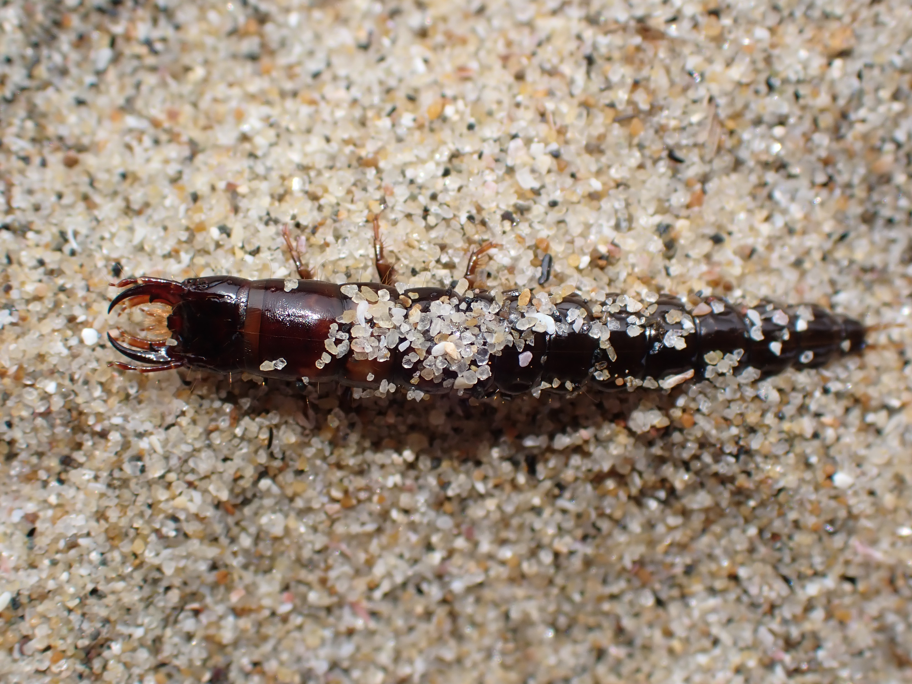

7月27日
不明な羽アリ
これはヨツボシオオアリというアリのようだ。
一昨日に駐車場の下を１匹で歩いていた羽アリだ。
女王アリのようでもある、がこの前のクロオオアリと同じく、単にでかい雄アリなのかもしれない。
１匹しか見つからなかったので、１匹だけで持ち帰って、前回クロオオアリのために作ったペットボトルの巣（以後、ペット巣）で飼うことにした。
ペット巣に入れるとすぐに、ストローの中に隠れて出てこなかった。
２５日に捕獲し、２日後の今日、２７日、仕事から帰ると外に出ている。餌として砂糖をスポンジの上に置いているが、食べるために外に出たのではないだろう。
すでに翅が取れている。
運がよければ働き蟻が誕生するかもしれない。ま、期待せずにしばらく待っておこう。
追記：
ヨツボシオオアリの結婚飛行は5月-６月と書かれてある。結婚飛行が８月のナワヨツボシオオアリかもしれない。こちらは海岸近くの林などによく居る種らしいが、採取場所は海岸から５ｋｍほど離れた住宅街だ。


7月27日
不明な羽アリ
これはヨツボシオオアリというアリのようだ。
一昨日に駐車場の下を１匹で歩いていた羽アリだ。
女王アリのようでもある、がこの前のクロオオアリと同じく、単にでかい雄アリなのかもしれない。
１匹しか見つからなかったので、１匹だけで持ち帰って、前回クロオオアリのために作ったペットボトルの巣（以後、ペット巣）で飼うことにした。
ペット巣に入れるとすぐに、ストローの中に隠れて出てこなかった。
２５日に捕獲し、２日後の今日、２７日、仕事から帰ると外に出ている。餌として砂糖をスポンジの上に置いているが、食べるために外に出たのではないだろう。
すでに翅が取れている。
運がよければ働き蟻が誕生するかもしれない。ま、期待せずにしばらく待っておこう。
追記：
ヨツボシオオアリの結婚飛行は5月-６月と書かれてある。結婚飛行が８月のナワヨツボシオオアリかもしれない。こちらは海岸近くの林などによく居る種らしいが、採取場所は海岸から５ｋｍほど離れた住宅街だ。

2020年07月26日
ナミアゲハ
Papilio xuthus
チョウ目
アゲハチョウ科
アゲハチョウ属
分布：日本全土
時期：3-10月 2-5回発生
大きさ：35-60mm
食性：花の蜜、吸水
産卵：春-秋
幼虫：五齢幼虫まで、越冬する個体は蛹で越冬する
幼虫の食性：ミカン科植物の葉
羽化：春-秋
春型の成虫は夏型の成虫よりも小さい。キアゲハに似る。前翅の付け根の模様の黒い線が、はっきりしているのがナミアゲハで、塗りつぶしたようなのがキアゲハである。
【実家の庭にヒラヒラと飛んできて、ランタナの花にとまった。翅がボロボロだ。子どもに追いかけられたのか、長雨の影響なのか。それでもなおしっかりと飛んでいった。】


2020年07月26日
オニユリ
Lilium lancifolium
ユリ目
ユリ科
ユリ属
多年草（鱗茎）
原産：自生 帰化植物ではないが、一説では中国からの渡来種と言われている。
草丈：1-2m
葉の付き方：互生
花季：7-8月
一回り小さいコオニユリに似る。茎や葉の付け根にむかごがあるのがオニユリで、無いのがコオニユリである。
【海へと至る道の脇に大きく咲いていた。黒い斑点が毒々しく、庭に植えたいとは思えない。よく見ると茎のところに黒い豆みたいなのがある。むかごらしい。むかごというのは自然薯だけのものかと思っていた。むかごから芽がでるようだ。】


2020年07月21日
ニホンアマガエル
Hyla japonica
無尾目
アマガエル科
アマガエル属
変態する
分布：日本全土
時期：4-9月
大きさ：2-4.5cm メスが大きい
食性：小さな虫やクモ類
産卵：春
孵化：2-3日ほどで孵化しオタマジャクシになる
幼生：1ヶ月ほどかけて蛙になる
幼生の食性：動植物の死骸や藻類などを食べる
目から鼻にかけて褐色の帯があり、シュレーゲルアオガエルやモリアオガエルと区別がつく。
カエルは繁殖期の夜鳴くのが普通だが、ニホンアマガエルは「雨蛙」という言葉のとおり雨が降りそうになると昼間でもなく。
【いつもツチガエルがいる場所にはじめて別のカエルが居た。ちょうど大雨が降った後だった。あまり好きになれないツチガエルと違い、小さくて色もカエルらしくてかわいい。カエルといえばこのニホンアマガエルだ。】


2020年08月16日
"コオロギ類"
コオロギ？マツムシ？カマドウマ？の幼虫？
【キャンプ場のまさに竃門にやってきた。カマドウマに間違えないと思ったが、調べる限りむしろコオロギの幼虫に最も似ている。】

2020年07月12日
"カタツムリ"
"カタツムリ"
「カタツムリ」という語は日常語で、分類学上の名称ではない。右巻きのカタツムリがほとんどで、左巻きのカタツムリはわずかしかいない。
カタツムリやナメクジにに寄生する線虫には注意する。触ったらかならず綺麗に手を洗うこと。
【近所の公園の裏に続く雑木林に、樹液の出ている木を探しに行った。樹液の出ている木は一本も見つからず、大きなカタツムリを一匹見つけただけだった。この雑木林、ずっと奥まで進むとこの前、コミスジを見つけた場所とつながっていた。秘密の抜け道のようだ。カタツムリはカタツムリ、種の同定などできない。】

2020年06月28日
"オサムシ類"
【これは、ヘビトンボの幼虫のようである。しかし、見つけたのは、波打ち際の砂浜だ。近くの灌漑用水が流れ込んでいるので、そこから迷い込んできたヘビトンボの幼虫なのかもしれない。それとも、まったく別の虫の幼虫だろうか？あるいは、海にいるヘビトンボの幼虫なのか？
追記：いろいろと調べると、海岸性のオサムシ類がおり、それらの幼虫と非常によく似ているので、オサムシ類の幼虫のようだ。】

2020年06月07日
"クモ"
【卵を抱いている …

2020年07月06日
１匹めの羽化不全となったメスのカブトムシ、いちお今も生きているけれど、土の中に潜ったきり、夜も餌を食べている気配なし。残りの３匹もまだ出てこない。
で、この記事のカブトムシの蛹は、うちのカブトムシじゃなくて、別のとこのカブトムシの蛹。ぜんぜん羽化しないので様子を見てみたいと思って堀り出してみた。ちゃんと蛹として生きている。
蛹から成虫になる期間ってどうやって決まるのだろうか？同じ親から生まれている幼虫３０匹ぐらいのうち、すでに３週間前ぐらいに羽化して成虫になっているものもいる。
僕が飼育しているのは、家の個体もふくめていっこうに羽化しない。この人工蛹室に入れたが個体が羽化するころ、残りもすべて羽化してくれればいいのだが。
追記：
いろいろ動画見ても、やっぱり蛹は立っている状態なので、前とおなじように立ているよう人工蛹室の土に型をつけた。羽化不全となったときは、実際に目では見ていないが、羽化したときに成虫が足を動かしたさいに土が崩れて埋もれた状態になっていた。そうならないように、崩れ落ちていた斜面は作らないでも立てるような型にした。これで羽化不全が起こらなければ、ひとまずそれで良いということだろう。

2020年6月27日
ペットボトルでつくった人工蛹室の蛹が羽化した。
深夜に羽化していたようで、朝起きると半分、埋まっていた。
人工蛹室をつくった目的は、蛹室が崩れたため羽化の時に翅を広げられないからだった。
ので、人工蛹室をつくった目的は達成するどころか、より悪い結果を招いてしまったようだ。
カブトムシの羽化の日に、コカブトムシを死なせてしまった。原因は、虫カゴが乾燥しすぎたため。霧吹きで水をやるのが遅れたのもあるが、マットの厚みがなさすぎたのも原因だ。
羽化不全のカブトムシにコカブトムシ、可哀想なことをしてしまった。虫の飼育は、動物の飼育よりも死が簡単に訪れてしまうので …